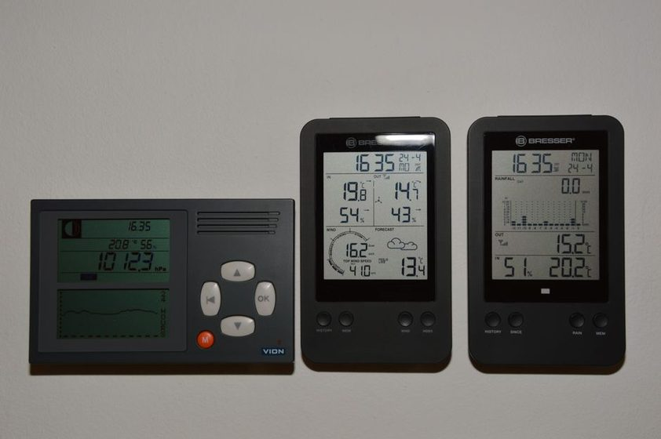
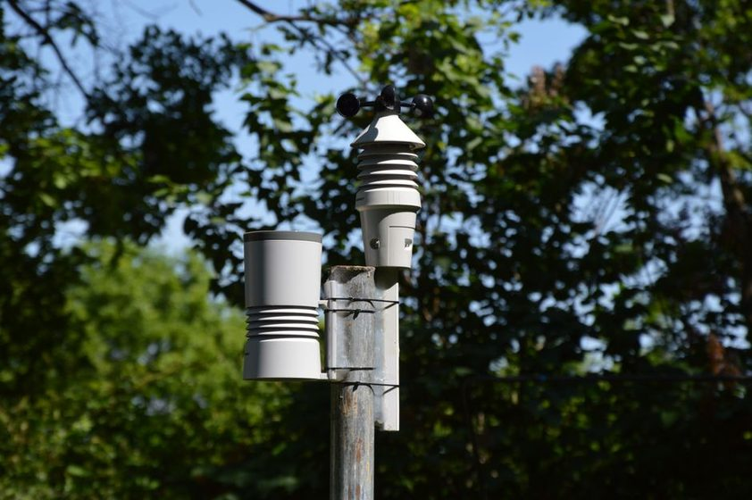

The Drift Nobody Notices Until the Second Winter
Sensors do not fail loudly; they wander a little every season until a check catches it.
The first year, every reading felt trustworthy by default. The thermometer had come out of its box a month earlier, the barometer had been checked once against a borrowed aneroid at a neighbor's kitchen table, and the numbers went straight into the log without a second thought. It was the second winter, not the first, when a Tuesday morning reading looked wrong for no obvious reason — not stuck, not broken, just quietly off by a margin too small to matter on any single day and too consistent to be noise once enough of those days were lined up in a column. That gap is the subject of this piece: the slow wander an instrument develops after enough seasons of heat, damp, cold, and ordinary handling, and the case for checking it again and again instead of once at setup and never again.
What Drift Actually Looks Like
Drift is not a malfunction in the usual sense. Nothing beeps, nothing sticks, and the instrument keeps producing a number every time you look at it. What changes is the relationship between that number and the air outside. An aneroid barometer's capsule flexes very slightly less after enough seasons of temperature swings, which nudges every pressure reading up or down by a hair. A thermometer mounted in a plastic housing can start reading a touch warm as the housing itself absorbs a little more sun than it did when new, or a touch cool once the mounting bracket has flexed and shaded the bulb differently than it did on day one. None of this shows up as an error message. It shows up, if it shows up at all, as a log that no longer quite agrees with a second instrument kept for comparison.
In this station's log, the barometer's discrepancy against a spare unit crept from roughly nothing in month three to a fairly steady 1 to 2 millibars high by month fourteen. The thermometer's gap against an indoor reference took longer to show and was smaller, a matter of a few tenths of a degree, but by the second winter it was consistent enough that the daily low readings had a visible, if modest, upward lean that had nothing to do with the actual weather.
The Habit That Hides It
The reason drift goes unnoticed for so long is not carelessness, exactly — it is the very reasonable assumption that a calibration performed once should keep holding. An instrument arrives, gets set against something trustworthy at install, and from then on is treated as a finished, settled fact rather than a running claim that needs re-checking. That habit works fine for a season or two. It works less well for a log meant to run for years, because a log that is never checked again quietly starts absorbing the instrument's drift as if it were part of the weather itself. A slowly rising set of "low" readings can look, on a chart, exactly like a slowly warming winter. Only a side-by-side comparison against something independent can tell the two apart, and a one-time setup check never gets a second chance to run that comparison.
A log that is never checked against anything else isn't recording the weather anymore. It's recording the weather plus whatever the instrument has slowly become.Station log, third winter
Reading the Second-Winter Signal
The mismatch here surfaced almost by accident. A second thermometer, kept indoors mainly as a curiosity, was brought outside for a week during the second winter to answer an unrelated question about a drafty window. Placed briefly beside the working outdoor unit, it disagreed by about half a degree on the first morning, then by a similar amount on each of the following mornings. Eleven mornings of paired readings put the average gap at roughly 0.4 to 0.7 degrees, small enough to dismiss as instrument variance if it had only happened once, but steady enough across nearly two weeks to look like something real. The barometer's own gap, tracked the same way against a stored reference unit pulled out for the occasion, had grown from the earlier 1 to 2 millibars to something closer to 2 to 3 by that point — a detail that lines up with the kind of long-run instrument comparison described in calibrating a home barometer without a lab.
What a two-point check catches
A single reading tells you almost nothing about drift, because you have no way to know if today's number is typical. Two readings, taken from two different instruments at the same moment, tell you whether they agree. Repeating that pairing across several consecutive mornings — not just one — is what separates a real, persistent gap from an ordinary bad morning.
Building a Recurring Check Into the Log
Once the second-winter gap had been noticed, the fix was less about the instrument and more about the habit around it. A one-time calibration was replaced with a recurring one, built into the log itself rather than left to memory:
- Keep a second, independent instrument specifically for comparison, not as a backup to swap in when the first one breaks.
- Run the comparison for at least three consecutive mornings each time, since a single paired reading can't distinguish drift from an ordinary off day.
- Check on a fixed point in the calendar — this log now checks near each solstice — rather than only when a reading feels wrong, since drift is exactly the kind of thing that doesn't feel wrong until it's large.
- Record the raw gap in the log alongside the adjusted number, so the size of the drift is itself part of the record, not discarded once a correction is applied.
The comparison instrument doesn't need to be fancier than the one it's checking; it mostly needs to be independent, kept somewhere its own conditions won't drift in the same direction at the same time. Over a longer run, that second instrument becomes its own small archive, which is roughly the same logic behind retiring an aging unit described in comparing two thermometers a decade apart.
| Winter | Thermometer gap | Barometer gap | Mornings compared | Log note |
|---|---|---|---|---|
| Year 1 | ~0.1°F | ~0.3 mb | 3 | Within normal instrument variance |
| Year 2 (first check) | ~0.5°F | ~1.5 mb | 11 | Gap noticed by accident, not by schedule |
| Year 2 (repeat, solstice) | ~0.6°F | ~1.9 mb | 7 | First scheduled recurring check |
| Year 3, summer | ~0.4°F | ~1.1 mb | 7 | Barometer capsule replaced between checks |
| Year 3, winter | ~0.3°F | ~1.0 mb | 7 | Gap stable, no further adjustment made |
Gaps are averages against a second, independent instrument, rounded to the nearest tenth. They describe one station's own log, not a manufacturer specification.
What the Recurring Check Changed
The practical effect was less about any single corrected number and more about what the three-year log could now be trusted to say. Before the recurring check existed, a slow rise in morning lows across a winter could mean a genuinely milder season, an instrument quietly drifting warm, or some mix of both, with no way to tell which from the log alone. After it existed, the raw-versus-reference gap sat right next to the reading, and a reader of the log — including its own keeper, a year later — could see at a glance how much of any trend was weather and how much was instrument. That distinction turns out to matter most exactly when a season looks unusual, which is also when the temptation to trust the raw number without question is strongest.
A note on scope
This piece describes one household's record-keeping habit and the reasoning behind a recurring reference check. It is not an evaluation of any particular instrument brand or model, does not claim a fixed rate of drift for any device, and isn't a substitute for a manufacturer's own calibration guidance. If an instrument's accuracy matters for a formal or professional purpose, the manufacturer's documentation or a metrology service is the right place to ask, not a backyard log.
Read also

Data SeriesWhat Three Summers of Noon Readings Actually Show
A single fixed hour, tracked for three years, turns out to hide as much as it reveals.
 Method
Method
The Monthly Average Hides the Day It Happened
Two months with the same mean can contain completely different weeks.

InstrumentsScreen Placement and the Half-Degree of Radiant Error
Moving a thermometer eighteen inches changed three years of afternoon highs.